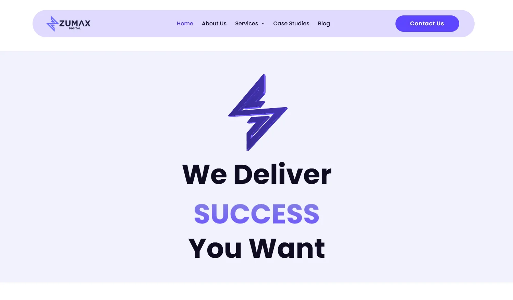

Zumax Digital: Your Full-Service Digital Marketing Agency in Malaysia

Building an online presence takes more than a website or occasional social media posts. It requires the right strategy to reach potential customers, earn their trust and turn interest into enquiries. Based in George Town, Penang, Zumax Digital is a full-service digital marketing agency in Malaysia that brings these elements together. With over ten years of industry experience, the agency works with businesses looking to strengthen their brands, generate leads and improve their digital performance through practical, data-driven marketing strategies.
Zumax Digital offers a range of services, including SEO services in Malaysia, Google Ads management, professional web design, Facebook marketing and influencer marketing. Its team also supports businesses with branding, graphic design, copywriting and content creation. By combining marketing expertise with creative and technical capabilities, Zumax Digital helps businesses develop campaigns that match their objectives, whether they want to attract local customers, reach new markets or increase online sales.
What sets the agency apart is its focus on customised solutions, transparent reporting and dedicated account management. Rather than treating advertising, SEO and website design as separate activities, Zumax Digital connects them around shared business goals. Business owners can better understand how their campaigns perform and where improvements are needed. If you are comparing digital marketing companies in Malaysia, visit https://zumaxdigital.com/ to explore the agency's services, portfolio and approach to building sustainable online growth.
Contact Zumax Digital
- Name: Zumax Digital - Best Digital Marketing Agency in Malaysia
- Address: Level 8. Unit 3A, Wisma Leader, 8, Jalan Larut, 10050 George Town, Pulau Pinang
- Phone: +6017-788 5471
- Working Hours: Monday to Friday: 8.30a.m - 5.30p.m
- Email: salesteam@zumaxdigital.com